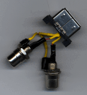

The audio signals are on pins 4 and 17, with the ground on pin 5. The ground gets wired to the outer part of both RCA jacks. Pin 4 goes to the center connection on the audio out jack and Pin 17 goes to the center connection on the audio in jack.
I created two of my own adapters in a couple hours on a weekend. Following are some of the things I ran into, some lessons learned, and some basic instructions if you want to try this yourself.
Caution: If you mess with stuff like creating your own adapter you are taking a chance that you could ruin your MessagePad. Don't blame me if this happens. My home-rolled adapters work, but don't trust this document. Verify everything against the actual pinouts and specs from Apple. It's always possible I could have made a mistake when throwing this document together.
I used two different methods for housing the adapter. The first I cast out of epoxy adhesive (the kind you buy at the hardware store). This is a little more expensive and a lot more time-consuming than just building the connector into a box. The only advantage is that it's extremely tough. The second I put in a small plastic case. This was much much easier to put together, but it's not quite as sturdy.

[Updated 10/14/01] This is the hard part. They are almost impossible to find. The connectors that plug into the MessagePad used to be made by JAE. They were part number RX04-26P-SF1. The recommended dealer used to be Kensington Electronics. Don't bother calling them. Neither JAE nor Kensington have any left. The connectors haven't been manufactured for quite a while. I've heard some people still have a few on hand. I have no idea how to find them. If you are desperate, you can break open a serial port adapter and desolder the connector from the circuit board.
Creating an epoxy casting requires some modeling clay, large tubes of 5-minute epoxy, and a lot of patience. If you decide instead to use a plastic case as a housing, you will need one that's fairly small, about an inch wide, a couple of inches long, and deep enough to hold the RCA adapters.
The audio signals are on pins 4 and 17, with the ground on pin 5. The
ground gets wired to the outer part of both RCA jacks. Pin 4 goes to the
center connection on the audio out jack and Pin 17 goes to the center connection
on the audio in jack.
It's tough to wire the pins. It would be nice if there were a socket that fit the connector, but such a thing doesn't exist. The connector appears to be designed so you could fit a double-sided circuit board between the pins. You could solder the pins to this board and run the traces to solder pads where you could connect wires. In fact, this is apparently similar to what Apple does with the serial adapter (thanks to Carsten Lemmen for sending information about the innards of his adapter). I don't know anybody who can etch circuit boards, so I scrapped this idea.

I tried two methods of connecting wires to the pins on my two adapters. In each case I purposefully broke off all pins except 4, 5, and 17, to get some working room. On the first adapter I wire-wrapped the three pins with standard 30 gage (wire-wrapping) wire. The pins are short enough and close enough together that a wire-wrapping tool doesn't work. So I did it by hand - throw a loop in the wire, place it over a pin, tighten, then place one loop at a time, tightening (gently) and pushing the loops down to the bottom, until you reach the top of the pin. This is difficult, and takes a lot of time to do right. If you decide to do this, I recommend using some shrink tubing around the connections because they are all so close together. Soldering is almost impossible, because the wire wraps will be so close together that it's too easy to make a solder bridge. I used a drop of super glue on each pin to hold them in place.For the second adapter I tried something different. There is a small square hole right next to each pin. This hole is only about 1/16 inch deep (or so). You can take some 24 gage wire, hold it at the end with some needle-nosed pliers, and push it into the hole. It's tight enough that it should hold. You may have to slightly bend the pins outward to be able to fit the wire in the holes. Soldering to the pins becomes much easier. Shrink tubing is still a good idea, because the pins are only about 1mm apart.
After wiring the thing up, do yourself a favor and check that the adapter works before moving on. It's tough to fix a mistake later.
You'll have to cut (or melt) a hole for the connector and holes for
the jacks. Note that the top of the connector should be close to the edge
of the box, because there isn't much clearance under that small flip-up
cover on the end of the MessagePad. It's also best if you position the
connector to the right side of the box (looking at the front of the connector).
This is so the box doesn't cover up the power jack.


The other method I tried was to cast an adapter in epoxy. First I had
to plug up the holes in the bottom of the RCA jacks, so that they wouldn't
fill up with epoxy. Next, I cut a mold out of regular plasticene clay,
very lightly sprayed the inside with cooking spray (as a release agent),
placed some tape over the connector to keep out clay/oil/glue, pressed
the connector into the clay, and filled the mold with epoxy. The regular
epoxy adhesive you buy in a hardware store works fine. (Sorry for the blurriness
of the pictures.)
A couple of tips: You can mix the epoxy by squeezing it into a plastic
sandwich bag, then massaging the bag. When ready to use it, cut off a corner
of the bag and squeeze the contents out like a pastry cone. A cardboard
template also helps to hold the RCA jacks in place. Or you could turn the
adapter over, embed the jacks in the clay, and hold the connector on the
top.
 I
pulled off the clay and tape after the epoxy dried and cleaned the thing
up. I also applied another outside coat of epoxy, which made it shinier
and smoother. The result is what you see in the photo shown here. I also
applied some arrows with transfer lettering (hard to see in the photo)
to show which connector is input and which is output. This method makes
a nearly indestructable adapter, but it may not be worth the amount of
effort it takes. You also risk messing up your adapter if you accidentally
get epoxy too far down the metal part or in the end.
I
pulled off the clay and tape after the epoxy dried and cleaned the thing
up. I also applied another outside coat of epoxy, which made it shinier
and smoother. The result is what you see in the photo shown here. I also
applied some arrows with transfer lettering (hard to see in the photo)
to show which connector is input and which is output. This method makes
a nearly indestructable adapter, but it may not be worth the amount of
effort it takes. You also risk messing up your adapter if you accidentally
get epoxy too far down the metal part or in the end.
You can't hook a microphone directly to the adapter unless it's a line-level mic with an external power supply. You might be able to use headphones on the output, since headphone outputs are close to the same level, but don't blame me if this blows up your MessagePad.
Other things that would be interesting to try are phonenet ports, wiring the 2nd serial port, and power output (for controlling external devices, or whatever).
Use an Apple PlainTalk jac instead of RCA jack for the input. The plaintalk microphone is a line-level microphone. It requires 5V, supplied on the tip of the plug. The newton supplies 5V when recording. The only hitch is finding a PlainTalk jack. Apple won't sell you one. The best bet is to take one out of an old broken Mac. I think they started using these jacks on the AV models.